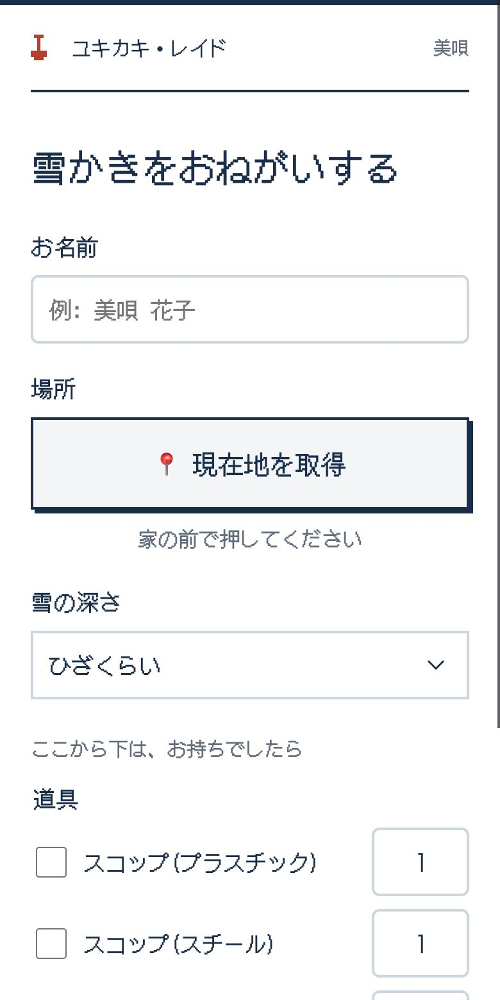
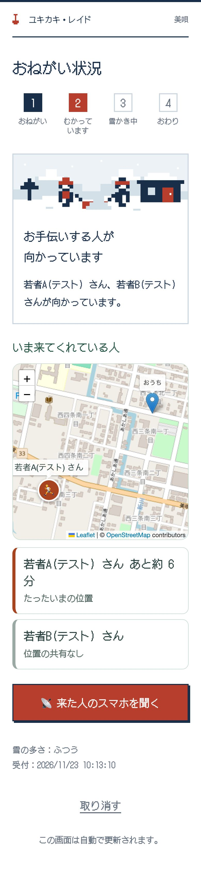
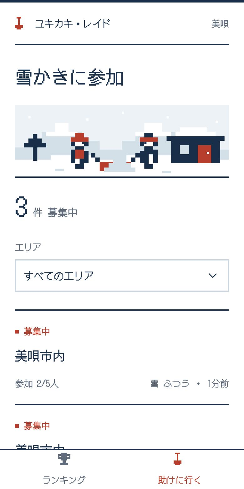
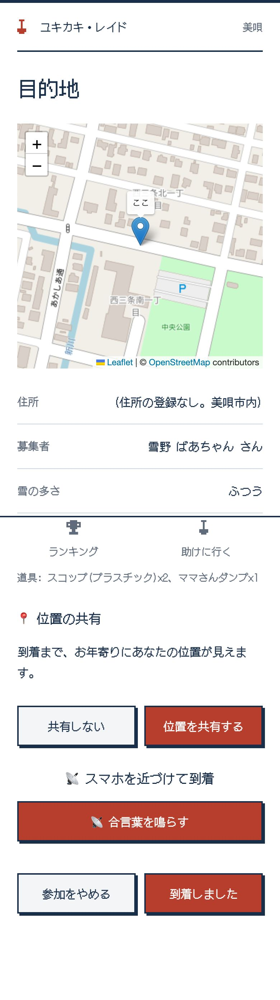
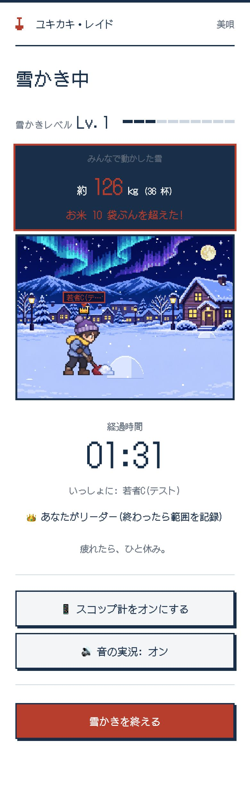
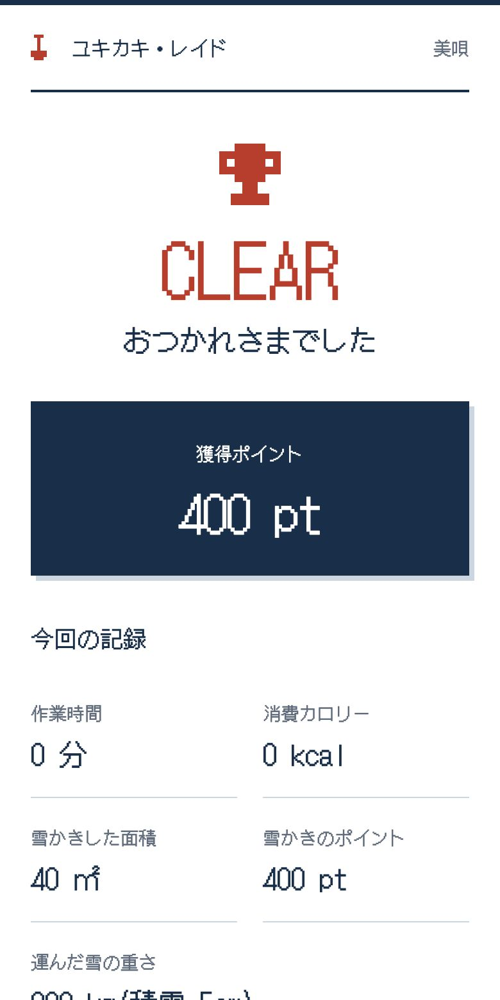

ユキカキ・レイド 使い方ガイド
美唄の雪かきを「頼む人」と「手伝う人」でつなぐ LINE アプリ
雪かきに困っているお年寄りが LINE で「たすけて」と押すと、近くの若者が集まって、みんなで雪かきします。ゲームのように楽しみながら、美唄に関わる人を 2 倍にすることが目標です。
2026 年 11 月 23 日時点の版1. 全体の流れ
「たすけて」
参加して向かう
雪かき
ランキング
👵 お年寄り(助けてほしい人)
- 名前と場所と雪の深さを入れて、おねがいする
- だれが向かっているか、地図で見て待つ
- 終わったら、来てくれた人に星でお礼
🧑 若者(助けたい人)
- 困っている人の一覧から選んで参加する
- 本人確認をして、家に向かう
- 雪かきして、ポイントとランキングで楽しむ
大雪の予報が出た日の夕方には、LINE に「明日は大雪になりそうです」というお知らせも届きます。
2. はじめに(友だち追加と利用者登録)
1LINE で友だち追加する
配られた QR コードを LINE で読み取って、「ユキカキ・レイド」の公式アカウントを友だちに追加します。
2利用者登録をする
トーク画面の下のメニューの 利用者登録 を押すと、「あてはまる方を押してください」と出ます。
- 雪かきを頼みたい人 → 助けてほしい
- 雪かきを手伝いたい人 → 助けたい
押すと、下のメニューがその人用に切り替わります。
| 助けてほしい人のメニュー | たすけて 登録の変更 |
|---|---|
| 助けたい人のメニュー | 助けに行く ランキング 登録の変更 |
あとから変えたいときは 登録の変更 を押します。どの画面にも右下に「メニューを最初に戻す」ボタンがあります。
3. お年寄り(助けてほしい人)の使い方
1「たすけて」を押して、おねがいする
メニューの たすけて を押すと、おねがいの画面が開きます。
- お名前 を入れる
- 家の前で 📍 現在地を取得 を押す(地図にピンが出ます)
- 雪の深さ を選ぶ(くるぶし / ひざ / こし以上)
- 貸せる 道具 があればチェックして数を入れる
- おねがいする を押す
位置の許可をたずねられたら「許可」を押してください。場所は、参加した若者にだけ見えます(参加前の人には、おおまかな場所しか見えません)。

2待機画面で、来てくれる人を待つ
おねがいすると、自動で待機画面になります。画面は自動で新しくなります。
- 上の 4 つの数字で、いまの段階が分かります(おねがい → むかっています → 雪かき中 → おわり)
- 向かっている人がいると、地図に若者のアイコン と 「あと約〇分」 が出ます(若者が位置の共有を選んだときだけ)
玄関に着いたら「スマホを近づけて到着」
📡 来た人のスマホを聞く を押して、来た若者にスマホを近づけてもらいます。若者のスマホが鳴らす 音の合言葉 を聞き取ると「〇〇さんが着きました!」と出ます。
マイクの許可をたずねられたら「許可」を押してください。やめたいときは 取り消す を押します。

3終わったら、星でお礼を送る
雪かきが終わると、待機画面に ありがとうを伝える が出ます。来てくれた人ごとに星(1〜5)を選んで ありがとうを送る を押します。星は若者のポイントになります。
4. 若者(助けたい人)の使い方
1「助けに行く」で、行き先を選ぶ
メニューの 助けに行く を押すと、助けを待っている人の一覧が出ます。エリアで絞り込めます。行けそうなものを選んで この雪かきに参加 を押します。
参加する前は、おおまかな場所(約 1km の範囲)と雪の多さだけが見えます。

2本人確認をする
はじめて参加するときは、本人確認があります。運転免許証かマイナンバーカードの 顔写真の面 を撮り、そのあとカメラに顔を向けて、指示どおりにまばたきなどをします。
写真はスマホの中だけで照合し、保存も送信もしません。マイナンバーカードの裏面(番号の面)は撮らないでください。
3場所を確かめて、向かう
参加すると、正確な住所と地図が見えるようになります。
- 📍 位置の共有: 位置を共有する を選ぶと、着くまでのあいだ、お年寄りの画面にあなたの位置と「あと約〇分」が出ます(見えるのはお年寄り本人だけ)
- 着いたら 📡 合言葉を鳴らす を押して、お年寄りのスマホに近づけます。聞き取られると自動で次の画面へ進みます
- うまくいかないときは 到着しました を押しても大丈夫です

4みんなが集まったら、雪かきを始める
待機中の画面に、集まった人数と名前が出ます。そろったら、だれか 1 人が 雪かきを始める を押します。このとき、リーダー(👑)がランダムで 1 人決まります。リーダーの役目は、最後に雪かきした範囲を地図に記録することだけです。
5雪かき中は、スマホをポケットへ
雪かき中の画面では、ドット絵の仲間たちが一緒に雪かきします。経過時間とレベルも出ます。
- 📱 スコップ計をオンにする を押してから、スマホを上着のポケットに入れて雪かきします。スマホの揺れで、すくった回数を数えます
- 音の実況: すくうたびに「ザクッ」と鳴り、「10杯!約35キロ動かしました」「みんなでお米 10 袋ぶんの雪を動かしました!」のように声で教えてくれます
- スコップ計をオンにしている間は、画面が自動で消えません
終わったら 雪かきを終える を押します。リーダーは雪かきした範囲を地図に記録し、ほかの人はリーダーの記録を待ちます。
自分のペースで、疲れたらひと休み。iPhone では、スコップ計をオンにするときに許可をたずねられます。

6結果とランキング
終わると、獲得ポイントと記録(作業時間・面積・運んだ雪の重さ・スコップの回数)が出ます。
| 雪かきのポイント | 作業した時間と、運んだ雪の重さ |
|---|---|
| 評価のポイント | お年寄りからもらった星 × 100 |
| 再会ボーナス | 前にも一緒だった人と、また一緒に雪かきしたとき |
| 友だち招待 | 招待した友だちが初めて雪かきを終えると、あなたに 500pt、友だちに 200pt |
ランキング では、今日 / これまでの順位と、美唄の仲間の人数のゲージ(目標は 2 倍)が見られます。友だちを誘う から LINE で招待を送れます。

5. 見どころの技術
発表で「こんなことができるんだ」と見せられる部分です。どれも、写真や音をサーバーに送らず、スマホの中だけで計算しています。
| 音の合言葉 | 若者のスマホが、人には聞こえにくい高い音(約 17.5〜18.8kHz)で 4 けたの合言葉を鳴らし、お年寄りのスマホがマイクで聞き取って「到着」にします。音は玄関先くらいでしか届かないので、GPS よりも確かに「その場にいた」ことが分かります。合言葉は若者ごとに違うので、だれが着いたかも分かります。 |
|---|---|
| スコップ計 | スマホの加速度センサーで、雪をすくう動きを数えます。重力の分を取り除き、揺れの山を数える仕組みです。 |
| 音の実況 | 効果音はその場で作り(音のファイルはなし)、ことばはスマホの読み上げ機能で話します。雪かき中にスマホを見なくても分かるようにしています。 |
| 顔の照合 | 身分証の顔写真と自撮りの顔が同じ人かを、スマホの中で AI が照合します。まばたきなどで「生きた本人か」も確かめます。 |
| 来てくれる人の現在地 | 向かっている若者の位置を 15 秒ごとに送り、お年寄りの地図に「あと約〇分」を出します。見えるのは依頼したお年寄り本人だけで、着いたら消えます。 |
| 大雪のお知らせ | 天気予報(Open-Meteo)から明日の朝の積雪を調べ、大雪のときだけ夕方に LINE でお知らせします。 |
6. こまったとき
- メニューが「利用者登録」のまま変わらない
- トーク画面を一度閉じて開き直してください。それでも変わらなければ、もう一度 利用者登録 を押します。
- 現在地が取れない
- スマホの設定で、LINE の位置情報を「許可」にしてから、もう一度押してください。
- 音の合言葉が聞き取られない
- 2 台のスマホをもっと近づけ、音量を上げてください。それでもだめなら、若者のスマホで 聞こえる音にする を押します。最後は 到着しました でも大丈夫です。何人も同時に鳴らすと混ざるので、1 人ずつ近づけてください。
- スコップ計の回数が増えない
- 画面を消す(スリープ)と数えられません。オンのあいだは画面が消えない設定にしていますが、消えてしまったら画面をつけ直してください。iPhone では許可のボタンを押す必要があります。
- 途中で LINE を閉じてしまった
- メニューの 助けに行く を押すと、続きの画面(集合・雪かき中など)に自動で戻ります。
- 本人確認がうまくいかない
- 明るい場所で、顔写真がはっきり写るように撮り直してください。光の反射で顔写真が白くならないように注意します。
7. デモ・発表のときの手順
用意するもの
- スマホ 2 台以上(1 台はお年寄り役で「助けてほしい」、もう 1 台は若者役で「助けたい」に登録)
- 身分証の代わりになる顔写真(本人確認を見せる場合)
見せる順番(おすすめ)
- お年寄り役: たすけて → 現在地を取得 → おねがいする
- 若者役: 助けに行く → 一覧から参加 → 本人確認 → 位置を共有
- お年寄り役の画面で、地図に若者のアイコンと「あと約〇分」が出るのを見せる
- 2 台を近づけて「音の合言葉」で到着 →「〇〇さんが着きました!」
- 雪かきを始め、スマホをポケットに入れて振る → 「ザクッ」と実況の声
- 雪かきを終える → 範囲を記録 → 結果とランキング → お年寄り役から星のお礼
テストモードについて
いまは練習用に「テストモード」がオンになっています。画面の上に「🧪 テスト中」の帯と、左下に 🧪 テスト ボタンが出ます。1 台のスマホでお年寄り役と若者役を切り替えたり、揺れや合言葉を「まねる」ボタンで試したりできます。
発表の前に、開発担当の人に「テストモードをオフにして公開し直して」と頼んでください(wrangler.jsonc の TEST_MODE を false にして公開)。オフにすると 🧪 の表示が消えます。
まだ実際のスマホで確かめていないこと
- LINE の中で、マイク(音の合言葉)と加速度センサー(スコップ計)と読み上げが使えるか
- 機種によって、高い音がスピーカーから出るか・マイクで拾えるか
本番の前に、実際に使うスマホで一度通して試してください。